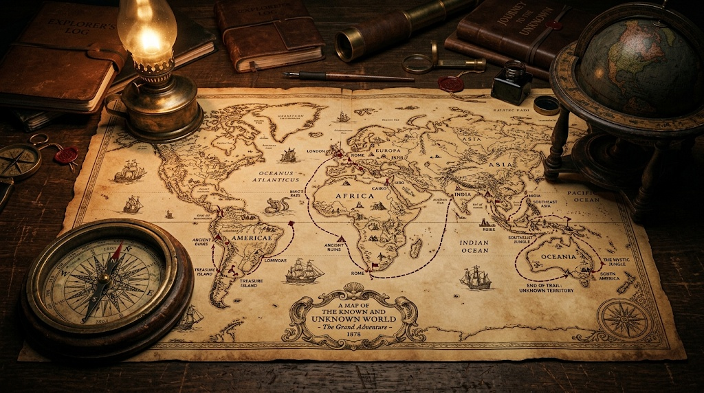

Bienvenue dans l'expédition. Avant de choisir votre parcours, identifiez votre carnet de voyage.
🆕 Débuter une partie
Créer un nouveau carnet avec un pseudonyme.
📂 Charger une partie
Retrouver une partie déjà enregistrée sur cet ordinateur.
📥 Importer une partie
Restaurer une partie depuis un fichier JSON.
Choisissez votre niveau d’expédition
🧭 Facile — 30 lieux
Une première traversée du monde : merveilles célèbres, indices accessibles.
🧭 Intermédiaire — 50 lieux
50 lieux entièrement différents du niveau facile.
🧭 Difficile — 80 lieux
80 lieux insolites, remarquables et parfois très peu connus.
🗝️ Votre carnet d’expédition
Choisissez un pseudonyme.
📷 Vérification des photographies locales
Avant de commencer, le jeu vérifie que les photos correspondant aux étapes de ce niveau sont bien présentes dans le dossier images/. Cette vérification ne révèle jamais le nom des lieux.

Extrait du journal
📷 Photo locale absente Ajoutez le fichier correspondant dans images/
🖼️ Photographie locale — le nom du lieu reste volontairement caché.
🏆 Fin de l’expédition
Bravo .
points
🧭 Nouvelle page du carnet
🧭 Aides
Trois aides successives sont disponibles. Elles sont proposées dans l’ordre.